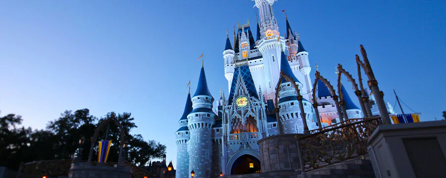
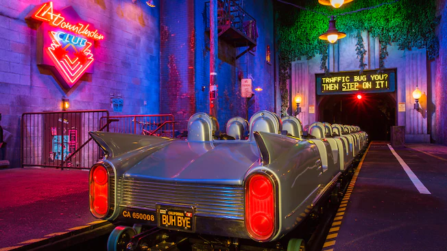
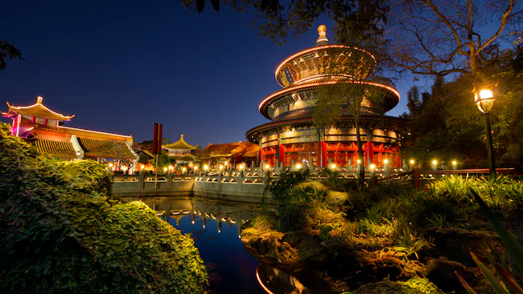
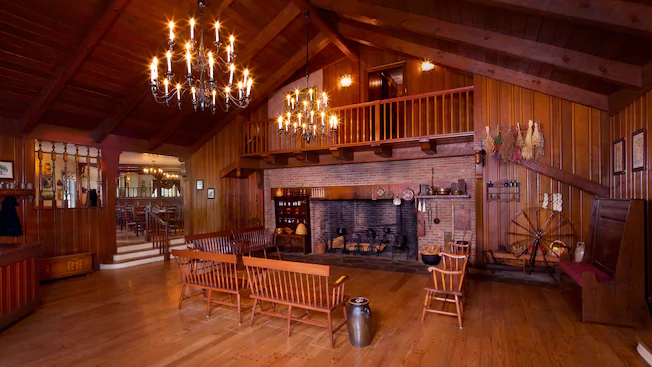
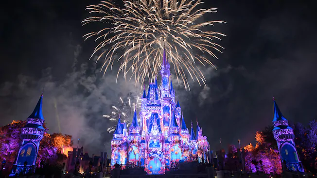
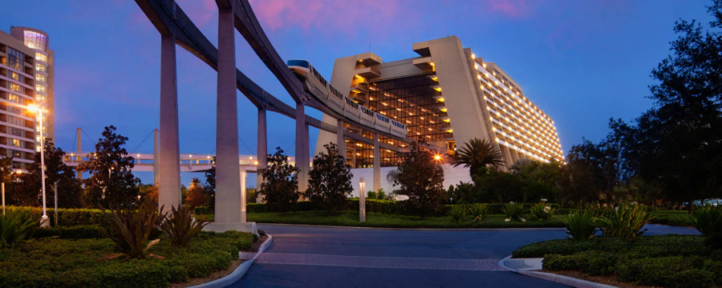

A Guide To a Magical Getaway
Take a break from the crazy world that we live in and go on a trip to a fantasy land, far...far..away. Walt Disney World has everything you could dream of and more! You can experience some of the most thrilling rides the world has to offer. You want authentic cuisine from 11 different countires in the same night? Disney has you covered. You can get the best rest you've ever had with delux accomidations at any of the Walt Disney World Resorts on property. During your stay with Mickey, his crew will take care of all your needs so all you have to do is have fun with the people you love most! Here are some of the top things to do while you're at Walt Disney World!
The Rock 'N' Roller Coaster Staring Areosmith
Race through the darkened freeways of Los Angeles in a super-stretch limo to the rockin' tunes of Aerosmith. You have to get to the show on time because the fans are waiting! This fast thrill ride will get the adrenaline going!
Epcot's World Showcase
Travel the world! Visit 11 countires by taking a stroll around Epcot's Lagoon. You can enjoy diverse culinary creations that are native to countries around the world along with architecture showcasing the intricate beauty these places hold.
The Liberty Tree Tavern
Pay tribute to our founding fathers as you dine at this stately colonial-style inn serving traditional New England-inspired fare. Rich wood paneling, candelabra chandeliers, large brick fireplaces, and walls lined with period portraits and curios welcome the weary time traveler. Each of the 6 rooms commemorates a pivotal figure in U.S. history.
Disney's Magical Fireworks Show
Experience a grand finale to your Disney day with the newest—and most spectacular—fireworks showcase in Magic Kingdom history! Happily Ever After starts with a dream… and takes you on an unforgettable journey that captures the heart, humor and heroism of many favorite Disney animated films!
Disney's Contemporary Resort
Retreat to this ultra-modern Disney Resort hotel and discover award-winning dining, spectacular views and dazzling pools. Whether you’re staying in the iconic A-frame Contemporary tower or the nearby Garden Wing, you can walk to Magic Kingdom main gate or catch the Resort Monorail as it breezes through the tower. Inside, a 90-foot-tall mural by Disney Legend Mary Blair—responsible for the distinct look and feel of the “it’s a small world” attraction—celebrates the Grand Canyon and the American Southwest.